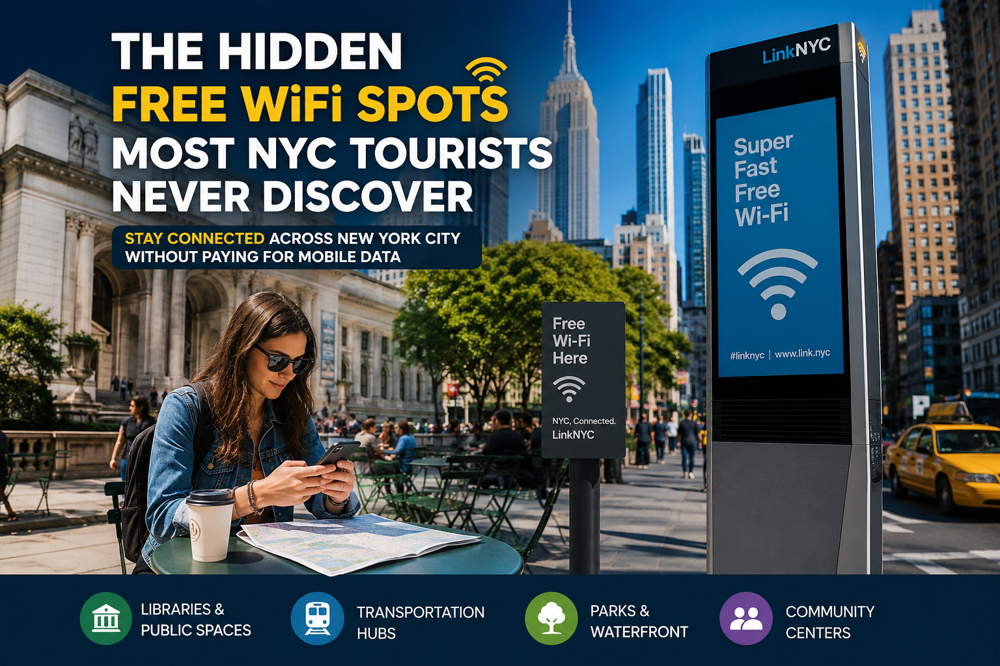

The Hidden Free WiFi Spots Most NYC Tourists Never Discover
Beyond Coffee Shops and Tourist Attractions: Unexpected Places to Stay Connected Across New York City Without Paying for Mobile Data

A surprising number of visitors spend their first day in New York City searching for something that is already all around them: a reliable internet connection. After leaving the airport or stepping out of a subway station, many instinctively head toward familiar coffee chains, hoping to find free WiFi before checking directions, confirming hotel reservations, contacting family, or uploading photos from the trip.
What many travelers never realize is that some of the city's most practical internet connections are not hidden behind a purchase requirement or tucked inside crowded cafés. Across New York City, there are public spaces, libraries, transportation hubs, waterfront areas, and neighborhood gathering places where staying connected can be easier, quieter, and often more comfortable than the locations that dominate travel blogs and social media recommendations.
The difference is not that these places are secret. Most are simply overlooked. Visitors tend to follow the same routes between famous attractions, while local residents gradually learn which places provide dependable connectivity with fewer crowds and a better overall experience.
This guide explores those overlooked opportunities. Rather than listing every public WiFi network in the city, it explains why certain locations consistently work better than others, what makes them useful in different situations, and how understanding New York City's public digital infrastructure can save both time and mobile data throughout your visit.
Whether you are visiting New York for a weekend vacation, traveling for business, studying abroad, or working remotely while exploring the city, knowing where and how to find reliable free WiFi can make everyday decisions considerably easier. Sometimes the best connection is only a short walk away from the busiest tourist destination.
Why So Many Tourists Miss the Best Free WiFi Locations
Most online travel guides recommend the same familiar places. Coffee shops, hotel lobbies, and major tourist attractions appear repeatedly because they are easy to recognize and widely known. As a result, thousands of visitors naturally converge on the same limited number of internet access points every day.
That pattern creates an interesting paradox. The locations that appear most frequently in travel recommendations are often the busiest, the noisiest, and occasionally the least comfortable places to spend more than a few minutes online. Limited seating, crowded tables, and slower connections during peak hours are common experiences in areas with heavy visitor traffic.
Meanwhile, many public facilities built to serve residents also welcome visitors. These places rarely become popular on social media because they are designed primarily for everyday community use rather than tourism. Consequently, they often provide a calmer environment for checking email, planning the next destination, making transportation arrangements, or catching up on work between sightseeing stops.
Travelers can also check the latest subway schedules, service changes, and accessibility information directly from the Metropolitan Transportation Authority (MTA) while planning trips throughout New York City.
Understanding this difference changes the way many experienced travelers move around New York City. Instead of searching for WiFi only after the need becomes urgent, they recognize which neighborhoods naturally offer reliable public connectivity and incorporate those locations into their daily itinerary.
Rather than thinking of free WiFi as something found only inside businesses, it is often more useful to think about the city itself as a network of connected public spaces, each serving different needs depending on the time of day, surrounding activity, and available facilities.
New York City's Digital Infrastructure Is Larger Than Most Visitors Expect
To first-time visitors, New York can appear to be a city where internet access depends largely on commercial establishments. That impression is understandable because cafés, restaurants, and retail stores advertise free WiFi more visibly than public institutions do. In reality, the city's digital infrastructure extends well beyond private businesses.
Over the past decade, public connectivity has become part of everyday urban life throughout many neighborhoods. Residents routinely rely on internet access while commuting, studying, attending community events, waiting for appointments, or simply spending time outdoors. Visitors often benefit from the same infrastructure without realizing how extensive it has become.
This broader expansion has also been supported by city initiatives aimed at improving public digital access. According to the New York City Office of Technology and Innovation (OTI), public connectivity has become an important component of the city's digital infrastructure through programs such as LinkNYC and other connectivity initiatives.
New York City's public connectivity has expanded significantly through initiatives such as LinkNYC, which provides free public WiFi, device charging, and access to city services through kiosks installed across the five boroughs.
This broader network exists because reliable internet access increasingly supports essential daily activities. Navigation applications update in real time, transit information changes throughout the day, digital tickets require online verification, restaurant reservations are managed through mobile platforms, and emergency notifications are frequently delivered electronically. Access to the internet has become closely connected to how people experience and navigate the city.
For travelers, understanding this context is more valuable than memorizing individual hotspot names. Neighborhoods evolve, businesses open and close, and public facilities occasionally update their services. Learning how New York approaches public connectivity makes it much easier to discover dependable internet access naturally as you explore different parts of the city.
That perspective also helps explain why local residents often appear to find reliable WiFi with little effort. They are not necessarily using secret locations. More often, they understand how the city's public spaces, transportation systems, civic institutions, and commercial areas work together to create numerous opportunities for staying connected throughout the day.
Looking Beyond Coffee Shops Can Improve Your Entire Day
For many travelers, finding free WiFi begins with searching for the nearest café. While coffee shops certainly remain useful, relying on them exclusively can unintentionally limit both flexibility and comfort. During busy hours, seating may be unavailable, electrical outlets can already be occupied, background noise often makes video calls difficult, and purchasing food or drinks may become an unofficial expectation for extended stays.
Exploring alternative locations often produces benefits that extend beyond internet access itself. Public libraries (i.e: New York Public Library, Brooklyn Public Library, Queens Public Library, Stavros Niarchos Foundation Library, Jefferson Market Library) typically provide quieter surroundings for focused work, waterfront public spaces offer opportunities to relax while organizing travel plans, and community gathering areas can serve as convenient places to recharge both electronic devices and personal energy after hours of walking.
Visitors looking for a quiet place to work or plan their itinerary can also take advantage of the free WiFi available at many branches of the New York Public Library during regular opening hours.
Many experienced visitors gradually discover that changing where they connect also changes how they experience New York City. Instead of viewing internet access as another travel inconvenience, it becomes part of a more flexible routine that fits naturally between museums, parks, neighborhoods, cultural attractions, and local restaurants.
This shift in perspective is one reason repeat visitors often navigate the city more confidently than first-time tourists. They spend less time searching for a signal and more time enjoying the places they came to see. Reliable connectivity becomes a supporting tool rather than the primary objective of the afternoon.
In the next sections, we'll explore the types of public places where locals frequently stay connected, why those environments often outperform crowded tourist hotspots, and how choosing the right location for the right purpose can make your entire visit more efficient and enjoyable.
Public Libraries: One of the City's Most Underrated Places to Get Online
Among local residents, public libraries are often the first places that come to mind when a stable internet connection is needed. Surprisingly, many visitors walk past these buildings without realizing they are welcome to enter during normal operating hours, even if they are not New York residents.
Libraries offer something that many commercial locations cannot: an environment intentionally designed for concentration. Comfortable seating, quiet reading areas, climate-controlled interiors, public restrooms, and dependable internet access create an ideal setting for tasks that require more than a quick glance at a smartphone.
Travelers frequently use library WiFi to organize hundreds of vacation photos, confirm airline reservations, complete online check-in before a flight, download offline maps for later use, upload work documents, or communicate with family through video calls. These activities can become frustrating in crowded cafés where bandwidth is shared among dozens of customers and seating is limited.
Another advantage is predictability. While individual branches vary in size and available facilities, public libraries generally maintain clear operating hours and consistent public service standards. Visitors know what to expect, making them reliable stops during a full day of exploring the city.
For digital nomads, students, researchers, and business travelers, libraries often provide a better temporary workspace than many locations specifically marketed toward tourists. The atmosphere encourages productivity while still remaining welcoming to people simply looking for a dependable place to reconnect with the internet.
Transportation Hubs Often Provide More Than Just Transit
Many travelers think of train stations and transit centers only as places to catch the next subway or commuter rail. In reality, some of New York City's busiest transportation hubs (as like: Grand Central Terminal, Penn Station, Fulton Center, World Trade Center Transportation Hub) also function as temporary digital workspaces where thousands of people check email, coordinate meetings, or plan the next stage of their journey.
These locations naturally attract commuters who depend on smartphones throughout the day. As a result, internet connectivity has become an important part of the overall passenger experience. Waiting areas frequently provide opportunities to sit down, recharge devices, review travel plans, or complete quick online tasks before continuing across the city.
The greatest benefit is convenience. Instead of making an extra stop solely to find WiFi, travelers can accomplish several tasks while already waiting for a train or transferring between transportation services. This makes efficient use of time without disrupting the day's itinerary.
Because passenger traffic changes throughout the day, the overall experience can vary considerably. Early mornings often feel calmer than evening rush hours, while midday periods may provide a comfortable balance between accessibility and available seating.
Waterfront Parks and Public Gathering Spaces Are Becoming Increasingly Connected
One of the biggest surprises for first-time visitors is that internet access is no longer confined to indoor spaces. Over the past several years, many public gathering areas have evolved into multifunctional environments where people exercise, eat lunch, attend community events, work remotely, and stay connected online at the same time.
Along portions of the city's waterfronts, visitors often see students studying outdoors, freelancers answering emails, families planning afternoon activities, and residents simply enjoying the view while remaining connected through public networks or nearby connectivity infrastructure.
The appeal goes beyond internet access itself. Natural light, open space, fresh air, and scenic surroundings can make routine digital tasks feel considerably less stressful than sitting inside a crowded commercial establishment. Reviewing maps or organizing tomorrow's sightseeing itinerary beside the water often becomes an enjoyable part of the travel experience rather than another item on the checklist.
These outdoor environments are particularly attractive during spring, summer, and early autumn, when mild weather encourages both residents and visitors to spend longer periods outside. Even a short break between attractions can become an opportunity to recharge devices, update travel plans, and relax before continuing the day.
Community Centers and Civic Buildings Are Frequently Overlooked
Another category of locations that receives little attention in traditional travel guides includes community-oriented public facilities. These spaces exist primarily to serve local neighborhoods, yet many also welcome visitors who need basic public services or simply want to spend time indoors.
Unlike businesses that depend on customer turnover, civic facilities generally prioritize accessibility and public use. While individual policies differ by location, many offer seating areas, information desks, and environments where brief internet use feels entirely appropriate.
Because these buildings rarely appear in tourism-focused recommendations, they are often noticeably quieter than nearby commercial alternatives. For travelers needing fifteen or twenty uninterrupted minutes to manage online banking, purchase attraction tickets, complete digital forms, or arrange transportation, that difference can be significant.
The broader lesson is that New York City's public infrastructure extends well beyond landmarks and museums. Many everyday institutions contribute to a city where staying connected has gradually become part of normal urban life rather than a premium service reserved for paying customers.
Neighborhood Matters More Than Individual Hotspots
Experienced New Yorkers rarely memorize every available WiFi network. Instead, they develop an understanding of which neighborhoods consistently offer multiple opportunities to connect. That mindset is often more valuable than relying on a single hotspot that may be crowded, temporarily unavailable, or simply farther away than expected.
Areas with active commercial corridors, educational institutions, public parks, transportation connections, and civic facilities naturally create clusters of connectivity. If one location happens to be busy, another option is often only a short walk away.
This flexible approach reduces unnecessary stress throughout the day. Rather than interrupting sightseeing to search specifically for internet access, travelers can continue exploring with confidence, knowing that another suitable location is likely nearby.
Thinking in terms of connected neighborhoods instead of isolated WiFi spots also makes travel planning more resilient. Businesses change ownership, operating hours evolve, and individual networks occasionally experience technical issues. A neighborhood with multiple connectivity options remains dependable even when one specific location is unavailable.
In the next section, we'll examine practical strategies for using public WiFi safely, protecting personal information while traveling, and knowing when free internet access is the right choice versus when using your own mobile connection provides better security.
How to Use Public WiFi Safely While Traveling
Finding a free internet connection is only part of the equation. Knowing how to use public WiFi responsibly is equally important, especially when traveling in an unfamiliar city where much of your itinerary depends on online services.
Most public networks are designed for convenience rather than privacy. Whether you are connecting inside a library, transportation hub, public plaza, or community space, it is wise to assume that the network is shared with many other users at the same time. While this does not automatically make public WiFi unsafe, it does mean travelers should adopt a few simple security habits.
The easiest precaution is to visit websites that use encrypted HTTPS connections. Today, most major travel platforms, airlines, banks, messaging services, and reservation systems already use encrypted connections by default, helping protect information exchanged between your device and the service you are accessing.
For activities involving highly sensitive information—such as accessing financial accounts, changing important passwords, or transmitting confidential business documents—it may be preferable to use your mobile data connection if one is available. Separating routine browsing from sensitive transactions is a practical habit that many experienced travelers follow regardless of which city they are visiting.
Keeping your phone, tablet, or laptop updated with the latest operating system and security patches also reduces potential risks. Software updates frequently include improvements that protect devices from newly discovered vulnerabilities, making them worthwhile before any international trip.
Avoid Connecting to Networks That Seem Suspicious
One of the most common mistakes travelers make is joining the first network that appears on their device without confirming its legitimacy. Popular locations sometimes display several network names with similar wording, making it difficult to know which one is official.
Whenever possible, verify the correct network name through posted signage, information desks, or staff members rather than relying on guesswork. A network named almost identically to the legitimate one may simply belong to another nearby business, but taking a moment to confirm avoids unnecessary uncertainty.
If a public WiFi network requests unusually personal information before allowing access, such as extensive personal details unrelated to providing internet service, consider whether connecting is truly necessary. Legitimate public access portals generally request only minimal information, if any, before granting temporary connectivity.
It is also good practice to disable automatic connection to open WiFi networks. This prevents your device from joining unfamiliar networks without your knowledge while walking through busy commercial districts where dozens of wireless signals may be available simultaneously.
Download What You Need Before Leaving the Connection
Reliable travelers often think ahead rather than depending on constant internet access throughout the day. Once connected to a dependable public network, take a few extra minutes to prepare for the hours ahead.
Offline maps can be downloaded for neighborhoods you plan to visit later. Museum tickets, boarding passes, train confirmations, restaurant reservations, and attraction QR codes can usually be saved directly onto your device. Translation packages, travel guides, and emergency contact information are also worth storing locally before leaving a strong connection.
This small amount of preparation reduces dependence on finding another hotspot every few hours. Even if your next destination has excellent connectivity, knowing that essential information remains available without internet access provides additional peace of mind.
Photographers often use these opportunities to back up images to cloud storage while connected to WiFi, preserving valuable travel memories without consuming expensive international mobile data plans.
Power Can Be Just as Valuable as Internet Access
A fast internet connection becomes far less useful if your phone battery is nearly empty. Navigation, photography, video recording, translation apps, and continuous GPS usage all place significant demands on modern smartphones, particularly during full days of sightseeing.
For this reason, experienced visitors frequently look for locations that combine multiple conveniences instead of focusing exclusively on WiFi. A comfortable seat, nearby electrical outlets, clean facilities, and a stable internet connection together create a much better experience than simply finding the strongest wireless signal.
Carrying a fully charged portable power bank also complements the city's public connectivity. Even when WiFi is readily available, maintaining sufficient battery life ensures that digital tickets, maps, ride-share services, and emergency communication remain accessible throughout the day.
Thinking about internet access and battery life as a single travel strategy often leads to smoother, less stressful exploration of the city.
Sometimes the Best WiFi Stop Is the One You Didn't Plan
One reason experienced New York visitors appear so comfortable navigating the city is their willingness to remain flexible. Rather than following a rigid list of recommended hotspots, they pay attention to their surroundings and recognize opportunities as they naturally appear.
A quiet public building near a museum, a peaceful waterfront seating area between attractions, or a neighborhood library a few blocks from a subway station may provide a better experience than the crowded café originally planned.
This flexibility transforms internet access from a destination into a convenient part of everyday travel. Instead of interrupting the day to search desperately for a connection, travelers simply incorporate connectivity into the natural rhythm of exploring different neighborhoods.
As confidence grows, many visitors discover that they spend less time worrying about staying online and more time appreciating the city's architecture, public spaces, cultural diversity, and countless neighborhoods that make New York unlike anywhere else in the world.
Final Thoughts
The best free WiFi locations in New York City are not necessarily hidden—they are simply overshadowed by more familiar recommendations. While countless visitors continue searching for crowded coffee shops, many residents rely on a broader network of public spaces that quietly supports everyday digital life across the city.
Libraries, transportation hubs, waterfront parks, community facilities, and well-connected neighborhoods each serve different purposes depending on where your day takes you. Understanding this broader ecosystem makes it easier to stay connected without allowing internet access to dominate your travel plans.
Rather than memorizing individual hotspot names, focus on recognizing the types of places where reliable public connectivity naturally exists. That knowledge remains useful even as businesses change, neighborhoods evolve, and technology continues to improve.
With a little preparation, sensible security habits, and a willingness to look beyond the most obvious options, staying online in New York City becomes remarkably straightforward. The result is less time searching for a signal, lower mobile data costs, and more time enjoying everything the city has to offer.
Frequently Asked Questions About Free WiFi in New York City
Is free WiFi widely available throughout New York City?
Yes. Free internet access is available in many parts of New York City through a combination of public institutions, transportation facilities, outdoor public spaces, and participating businesses. Availability varies by neighborhood, but visitors rarely need to travel far before finding another opportunity to connect. The key is understanding where public connectivity is most commonly integrated into everyday city life rather than relying solely on coffee shops.
Can tourists use public library WiFi without a New York library card?
In many cases, visitors can access WiFi inside public library buildings without borrowing materials or obtaining a library card. Individual branches may have their own policies regarding computer usage or extended services, but wireless internet access is generally intended to support everyone using the library as a public space during operating hours.
Is public WiFi fast enough for remote work?
That depends on the location, the number of people connected, and the type of work you are doing. Checking email, participating in video meetings, accessing cloud documents, and collaborating through productivity platforms are often possible on reliable public networks. However, if your work involves transferring very large files or requires uninterrupted high-speed connectivity throughout the day, a dedicated internet connection or personal mobile hotspot may provide a more consistent experience.
Is it safe to use free WiFi for everyday travel?
For routine activities such as checking maps, looking up restaurant information, confirming reservations, reading email, or purchasing attraction tickets through secure websites, public WiFi is generally suitable when used responsibly. Travelers should still avoid sharing highly sensitive information over unfamiliar networks and should verify that websites use encrypted HTTPS connections before entering personal data.
Do I need to buy something before using free WiFi?
Not always. While many cafés and restaurants provide internet access primarily for customers, numerous public spaces across the city offer connectivity without requiring a purchase. Libraries, certain transportation facilities, civic spaces, and other publicly accessible locations are examples where internet access may be available as part of the visitor experience rather than a commercial transaction.
What if I cannot find free WiFi when I need it?
Planning ahead can significantly reduce this problem. Downloading offline maps, saving digital tickets, storing hotel information, and keeping important travel documents available on your device allow you to continue your day even when internet access is temporarily unavailable. Because New York offers many potential connectivity options, another reliable network is often only a short walk away.
Should I rely entirely on free public WiFi during my trip?
Public WiFi works best as one part of your overall connectivity strategy. Many experienced travelers combine free WiFi with offline navigation, downloaded travel information, and a limited amount of mobile data for situations where immediate, secure internet access is important. This balanced approach offers flexibility while helping reduce international roaming costs.
How can I quickly identify good places to connect?
Instead of searching for individual hotspot names, look for neighborhoods that naturally combine public facilities, transportation connections, parks, libraries, educational institutions, and active commercial streets. These areas typically provide multiple connectivity options, making it easier to find an alternative if one location is crowded or temporarily unavailable.
Conclusion
Many visitors arrive in New York City believing that staying connected means purchasing coffee, searching for hotel lobbies, or using expensive international mobile data. In reality, the city's digital landscape is far more extensive. Public institutions, transportation hubs, neighborhood gathering places, waterfront spaces, and other community-focused locations collectively create a network that supports millions of residents and visitors every day.
The most successful travelers are not necessarily those who know the name of every available hotspot. They are the ones who understand how the city itself functions. Recognizing the types of places where reliable connectivity naturally exists makes it easier to adapt your plans, save valuable time, and avoid unnecessary frustration throughout your visit.
Equally important is using public WiFi wisely. Choosing legitimate networks, protecting sensitive information, downloading essential travel resources in advance, and keeping your devices charged all contribute to a smoother and more secure experience. A few simple habits can make free internet access a dependable travel companion rather than an unexpected challenge.
As New York continues expanding its public digital infrastructure, visitors have more opportunities than ever to stay connected without depending exclusively on commercial businesses. Looking beyond the obvious choices often leads not only to better internet access but also to quieter spaces, new neighborhoods, and experiences that many tourists never discover.
Whether you're navigating your first trip to Manhattan, exploring Brooklyn's waterfront, visiting museums in the Bronx, walking through Queens, or taking the ferry to Staten Island, understanding where and how to find reliable free WiFi allows you to spend less time searching for a signal and more time experiencing everything New York City has to offer.
Finding free WiFi in New York City becomes much easier when you know where to look. Instead of relying on random searches or outdated travel recommendations, using a dedicated map can help you identify nearby public hotspots before you need them.
WiFiNYC.app brings together free WiFi locations across New York City's five boroughs, making it easier to discover places to connect while exploring the city. Whether you're planning your route in advance or searching for internet access on the go, having a reliable reference can save time, reduce mobile data usage, and help you stay connected throughout your visit.
Information and Availability
Public WiFi availability, operating hours, access policies, and network performance may change over time. Libraries, transportation facilities, public spaces, and participating organizations occasionally update their services, maintenance schedules, or visitor access policies. Before making a special trip to a specific location, it's always a good idea to verify current opening hours and available amenities through the official website of the relevant organization. Doing so can help you avoid unexpected closures or temporary service interruptions during your visit.